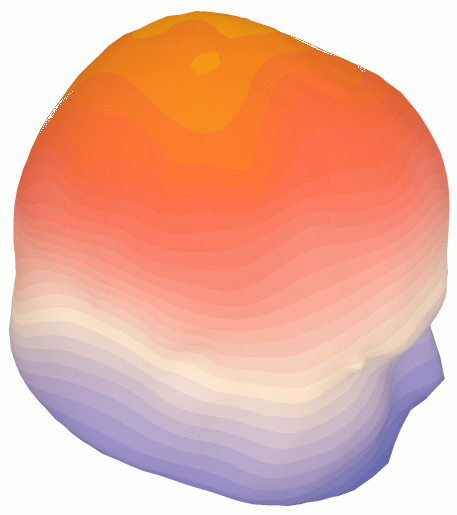

This toolbox is released under the GNU General Public License (GPL, see http://www.gnu.org/licenses/gpl.html). This is a copyleft license, which means you have the freedom to use, distribute and modify the code, but only on the condition that you must pass on this freedom. You can integrate this code into proprietary packages, but you must do so according to this rule. That is, some parts of your proprietary package will not have this freedom, but those parts derived from this code must retain that freedom. You must use, distribute and develop the code herein in accordance with the GPL.
Firstly, this is not a signal processing toolbox. Of course, once the data is loaded, there are many matlab functions available for data processing, but few of them are integrated into a GUI interface here. At present, there are no specific functions for processing raw EEG, such as filtering, averaging, etc. For examples of signal processing tools, see the matlab signal processing toolbox and the links below, especially EEGLAB.
This toolbox has been developed to facilitate quick and easy import, visualisation and measurement for ERP data. The toolbox can open and visualise ERP averaged data (Neuroscan, ascii formats), 2D/3D electrode coordinates and 3D cerebral tissue tesselations (meshes). All the features can be explored quickly and easily using the example data provided in the toolbox. The GUI interface is simple and intuitive. The following lists the features already available and some items that could be developed.
If the electrode position data is available or adapted from the standardized electrode positions available, the toolbox can generate topographic maps. There are various topography options, including 2D/3D surface mapping with various controls for contour mapping, scaling, and colour maps. If a scalp tesselation is available, the toolbox can load and visualise the 'mesh' and interpolating from the electrodes onto the mesh (only when they are already coregistered - the functions for coregistration are in early stages of development).
The following graphic illustrates 3D scalp topography
(with interpolation from 124 electrodes onto a scalp mesh).
As of May 2002, the methods are integrated with the GUI interface (they are
available in the mesh_laplacian.m and mesh_laplacian_interp.m functions). Many
thanks to Robert Oostenveld
for assistance in validating these functions.

There are useful functions to load and visualize MRI volumes in Analyze format (or the Freesurfer COR- format and GE Signa files). The Analyze avw* functions have been developed to carefully handle the orientation and implement a strict interpretation of the original Analyze 7.5 specification. This specification is available here in two very informative pdf documents:
If you need to, use the orient option in the avw* functions to handle different image orientations, but read the above documents and this discussion on the issue first (you will be wise in no time).
Also, when working with format conversions, consider these enlightening notes from Mark Jenkinson!
It is expected these MRI functions, together with mesh functions, will provide the opportunity to visualize mesh overlays with MRI volumes. It is also creates an avenue for conversion of MRI volumes. There are some MRI processing functions freely available for matlab, some of them are bundled into the CVS archives, but none are integrated into GUI interfaces yet.
For further MRI processing functions, see the matlab image processing toolbox, the SPM toolbox for matlab, and the FSL tools (in c/c++ with source code available).
The development of this matlab toolbox is in its infancy. It is not very clear what the system requirements are, although matlab 6+ is required. I understand from one report that the toolbox GUI does not work under matlab 5.x, but many command line functions should be OK. For most ERP plotting, the toolbox creates about 4-8Mb of data in the workspace and GUI. For more elaborate mesh plotting and interpolation, the toolbox can create up to 40Mb of workspace data (probably that much again in the GUI itself).
The toolbox has been developed on matlab 6.x on a windows platform. I have noticed some minor problems with mesh plotting and interpolation on systems without OpenGL graphics.
Download from the sourceforge development and release service (see http://sourceforge.net/projects/eeg/). There are now several release versions available (the latest version should be good). Also download the example data archives. The latest release incorporates all previous releases, but the most up-to-date development version is in the CVS repository (see below).
The download is a .tar.gz, .zip or .rar file (the latter can be extracted on windows and linux/unix platforms with rar software). On a linux/unix system, you should download the .tar.gz file and use the following command:
tar -zxvf eeg_toolbox_v1.5.tar.gz
A CVS client is required to retrieve data from the CVS archive. CVS clients are available for every major operating system, eg:
To view the modules in this project, use the www interface to the
CVS repository.
The modules to check out are 'eeg_toolbox' and 'mri_toolbox'. The CVS
repository can be checked out through anonymous (pserver) CVS with the
following instructions (when prompted for a password, simply press Enter).
cvs -d:pserver:anonymous@cvs.sourceforge.net:/cvsroot/eeg login
cvs -z3 -d:pserver:anonymous@cvs.sourceforge.net:/cvsroot/eeg co 'modulename'
Updates from within the module's directory do not need the -d parameter.
Extract it to a folder on your matlab path or use the
'addpath [eeg_toolbox folder] -end' command
to append a new folder to your matlab path.
To ask questions or keep informed of updates, subscribe to eeg-users.
See the getting started guide.
See the auto-html documentation for both eeg_toolbox and mri_toolbox, with similar info also available by typing 'doc eeg_toolbox' or 'doc mri_toolbox' at the matlab command prompt. This documentation provides html access to the information otherwise availabe using 'help [command]', once the toolbox is installed under matlab. In addition, it provides clear dependency links between functions in the toolbox. It was generated automatically by m2html. You may find the entire html help in the downloads as eegdoc.tar.gz and mridoc.tar.gz
It is possible to run all of the functions in the toolbox from the command prompt or a matlab script. Script and function names are intended to be loosely descriptive of their purpose (scripts have the _script.m extension). At this stage, most of the scripts and functions have been developed and tested on limited dataset specifications, so be careful to verify operations on your data. A couple of scripts may be under development and will not work at all. It is best if you have some familiarity with programming in matlab so that you can modify some script variables, which are defined at the outset of a script.
There is no guarantee that GUI interfaces will appear correctly on different matlab platforms. It is developed on windows98, matlab6.0 (R12), but some of the text and boxes may not scale correctly on other systems. The toolbox uses normalized scaling for all GUI widgets, which should display and resize OK on any platform, but the matlab handlers seem to work differently with different display systems (X, windows, etc). Please just try resizing the GUI window until it looks OK for you.
If you find the toolbox useful and wish to modify the GUI, please have a look at the gui*.m files to adjust the size of widgets, figures or whatever. If you do tidy up the code for your system, please email your modifications to me with an indication of what is modified for what system. If you have the time and inclination, please register as a sourceforge developer and make arrangements to integrate your development efforts with the cvs repository.
To development the toolbox, first consider the data structure. All the data is integrated into fields of the p struct, which is easily passed into the functions. At this early stage of the project, there is a degree of fluidity and flexibility, which may facilitate integration of this toolbox with similar projects, such as EEGLAB.
To fully engage the CVS repository, first get an account with sourceforge and then follow the sourceforge instructions to register and to setup your ssh/cvs access to the toolbox source code. The ssh/cvs setup and development process is made easy by reading the introduction materials at http://sfsetup.sourceforge.net. Also, subscribe to eeg-developers.